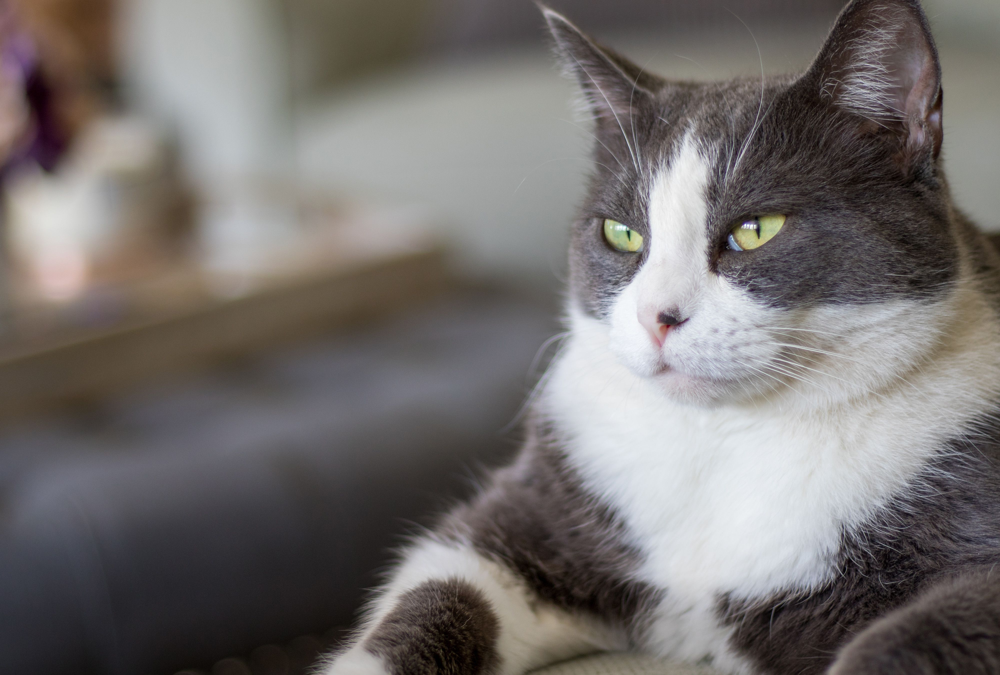

Gilbert is missing
Gilbert is missing. He left home on August 18 and has not been seen since. Gilbert is a 7-year-old domestic cat who is very friendly and home-loving. He has a soft grey coat with white markings and bright green eyes. Gilbert is known to approach people for attention and enjoys spending time both indoors and in the garden. His family is very worried and misses him dearly. If you have seen Gilbert or have any information about his whereabouts, please contact his owner as soon as possible. Any help in finding Gilbert would be greatly appreciated.

Last known location
Gilbert was last seen in the vicinity of the local park, near the playground area. His family believes he may have wandered off while exploring the outdoors. His usual hangout spots include the garden and the neighbor's yard. If you have any information about Gilbert's whereabouts, please let us know.